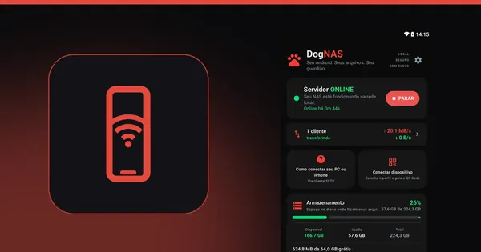
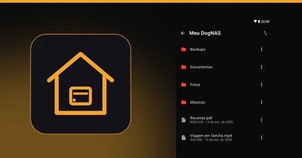
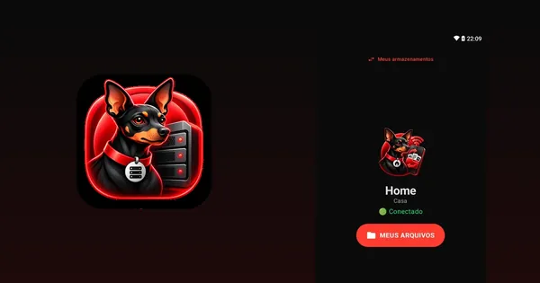

Seu Android! Seu armazenamento particular.
Seu tablet ou celular Android compatível vira um espaço para guardar e acessar fotos, vídeos e documentos pelo Wi-Fi. Sem nuvem, sem mensalidade e sem precisar comprar um NAS.
- Use um Android que você já tem
- Conecte outros celulares por QR Code
- Comece grátis, sem assinatura


Como funciona
Três passos, do servidor ao seu primeiro arquivo.
Ligue o servidor
Instale o DogNAS no Android que vai guardar os arquivos — no aparelho, num cartão SD ou num HD USB — e toque em Iniciar.
Conecte seu celular
Gere o QR Code de um perfil e leia com o DogNAS Client Lite. Cada perfil tem seu PIN e seu espaço.

Use seus arquivos
Navegue, envie e baixe pelo Wi-Fi de casa. PCs e Macs conectam por SFTP.
Usa SFTP, homelab ou automação? Veja a seção para usuários avançados →
Pronto para usar seu Android como armazenamento?
Quero instalar no meu Android agoraBenefícios
Os problemas que o DogNAS resolve
Em casa, no home office ou na casa inteligente, o DogNAS acaba com dores do dia a dia usando um Android que você já tem.
Uso doméstico
- Celular sempre cheio, sem espaço para fotos e vídeos.Envie fotos e vídeos para o DogNAS pelo Wi-Fi e libere espaço no celular. Mantenha também uma cópia independente do que é importante.
- Mensalidade de nuvem que só aumenta.Use o Android parado na gaveta: o Grátis guarda até 64 GB e o Pro é compra única, sem assinatura.
- Fotos da família espalhadas e guardadas em servidores de terceiros.Tudo num lugar só, dentro de casa: um perfil e um PIN para cada pessoa, sem nuvem e sem conta.
Home office
- Arquivos de trabalho presos em pendrives e em e-mails para si mesmo.Abra do PC, do Mac, do tablet ou do celular pela rede: FileZilla, WinSCP, Cyberduck ou DogNAS Client Lite.
- NAS tradicional caro e difícil de configurar.Instale um app, toque em Iniciar e pareie com QR Code e PIN. Sem mexer no roteador.
- Documentos de clientes em nuvem pública.Ficam na sua rede, cifrados no caminho (SSH/SFTP), com uma credencial por aparelho que você revoga quando quiser.
Smart home
- Gravações das câmeras presas à nuvem paga do fabricante.Câmeras e NVRs com envio por SFTP gravam direto no DogNAS, na sua rede.
- Automações sem um lugar para guardar arquivos.Home Assistant, Node-RED, rclone e scripts enviam e buscam arquivos por SFTP.
- Servidor que para quando falta luz.O celular tem bateria própria e, no Pro, o DogNAS pode iniciar sozinho depois de reiniciar (depende do aparelho e das permissões do Android).
Para sua casa
Seu Android antigo como armazenamento da casa, pelo Wi-Fi
Aquele celular parado na gaveta passa a guardar as fotos, os vídeos e os documentos de todo mundo. Você acessa pelo celular, de qualquer cômodo, sem cabos e sem pagar nuvem.
Libere espaço no seu celular!
Use o DogNAS Client Lite para mandar fotos e vídeos do seu celular para o DogNAS, que guarda tudo no seu perfil. Antes de apagar do celular, confira se os arquivos estão no DogNAS e mantenha uma cópia independente do que é importante.
Um espaço para cada pessoa
Cada perfil tem seu PIN e suas pastas. Ninguém vê os arquivos dos outros.
Fácil de conectar
Use o DogNAS Client Lite para se conectar ao seu servidor DogNAS: aponte a câmera para o QR Code, digite o PIN e pronto.
Sem nuvem e sem mensalidade
Os arquivos ficam no armazenamento do seu Android DogNAS, acessíveis pelo Wi-Fi da sua casa. Nada de conta, anúncios ou cobrança todo mês. Use todo o espaço do aparelho: 32, 64, 128, 256 GB e até mais (acima de 64 GB com o DogNAS Pro).
Acompanhe tudo


Privacidade e controle
Seus arquivos ficam com você
O DogNAS não tem nuvem: o acesso acontece entre os seus aparelhos, na sua rede.
Armazenamento seu
Os arquivos ficam no armazenamento que você escolheu no aparelho servidor: memória interna, cartão SD ou disco USB.
Conexão cifrada
O acesso usa SFTP sobre SSH-2 e o servidor é fixado no pareamento. Foi pensado para a mesma rede Wi-Fi; acesso de fora de casa não faz parte do produto hoje.
Um PIN por perfil
Cada perfil tem PIN e pastas próprios, e cada aparelho pareado tem uma credencial que você revoga quando quiser.
Apps sem coleta
Os apps não coletam, não enviam e não vendem dados pessoais e não têm anúncios. Este site só usa Google Analytics se você aceitar.
Seus arquivos ficam no armazenamento configurado no seu dispositivo servidor. O acesso depende da configuração de rede e das credenciais do DogNAS. Para arquivos importantes, mantenha uma cópia de backup independente.
Grátis para começar, Pro para ir além
Experimente em casa
Configure o primeiro servidor e confirme que o acesso aos arquivos funciona: até 64 GB gerenciados, o perfil Casa mais 2 e 3 aparelhos pareados.
Use todo o potencial do seu armazenamento
Todo o espaço do aparelho ou do disco, perfis e aparelhos ilimitados, envios e downloads do app cliente que continuam com o app fechado, o servidor iniciando sozinho depois de reiniciar (quando o Android permitir) e desempenho máximo.
| Grátis | Pro | |
|---|---|---|
| Armazenamento | 64 GB | Todo o aparelho |
| Perfis | Casa + 2 | Ilimitados |
| Dispositivos pareados | 3 | Ilimitados |
| Performance | Boa | Máxima otimizada |
| Transferências no app cliente, com o app fechado | Pausam | Continuam |
| Após reiniciar | Toque para iniciar | Inicia sozinho |
DogNAS Pro: compra única, sem assinatura. O DogNAS Client Lite é sempre gratuito.
Comece grátis e veja funcionar na sua casa.
Começar a usar meu Android como armazenamento hojePara tech, smart home e escritório
Um servidor SFTP no Android, sempre ligado
Um NAS leve para casa ou escritório: qualquer dispositivo, script ou automação que fale SFTP envia e busca arquivos pela rede Wi-Fi.

NAS em casa ou no escritório
Pastas por perfil, acessadas de PC, Mac e Linux com FileZilla, WinSCP, Cyberduck, rclone ou o sftp do OpenSSH.
Smart home e IoT
Receba arquivos de câmeras e NVRs com envio por SFTP, backups de outros servidores e scripts de automação (Home Assistant, Node-RED, cron).
Cifrado no caminho
SSH-2 com AES-GCM ou ChaCha20, chave do servidor fixada no pareamento e uma credencial por dispositivo, revogável a qualquer hora.
Pensado para ficar ligado
Grava na memória interna, num cartão SD ou num HD ou pendrive USB. No Pro, pode iniciar sozinho depois de reiniciar. Alguns fabricantes limitam apps em segundo plano: veja os requisitos.
Produtividade no escritório
Ideal para quem trabalha com fotos, vídeos e documentos e precisa organizar tudo: os arquivos ficam acessíveis no PC, no tablet e no smartphone, sem pendrives nem cabos. O DogNAS é toda a facilidade pelo seu Wi-Fi.
Especificações
| Protocolo | SFTP sobre SSH-2 |
|---|---|
| Autenticação | Usuário e senha — uma credencial por dispositivo, revogável |
| Armazenamento | Memória interna, cartão SD, HD ou pendrive USB |
| Clientes | DogNAS Client Lite, FileZilla, WinSCP, Cyberduck, rclone, OpenSSH e scripts |
| Requisitos | Android 7.0 ou mais recente, na mesma rede |
Para todos
Mais espaço para o seu DogNAS
Quer mais espaço? Ligue um SSD externo ou até aquele HD que você tirou do notebook antigo. Cada disco é um armazenamento independente: o DogNAS não junta vários discos num único volume.

SSD externo
Ligue um SSD USB e ganhe espaço e velocidade para guardar tudo da casa.
O HD do notebook antigo
Coloque o HD trocado do notebook numa case USB e dê uma nova vida a ele como armazenamento da casa.
Cartão SD ou pendrive
O jeito mais simples de aumentar o espaço do celular que virou servidor.
Vários DogNAS na casa
Tem mais de um Android parado? Cada um pode ser um DogNAS; o DogNAS Client Lite mostra todos em “Meus armazenamentos”.
Discos USB precisam de um celular com USB OTG. HDs mecânicos podem pedir mais energia do que o celular fornece: nesse caso, use um hub USB com fonte. No plano Grátis, o DogNAS gerencia até 64 GB; no Pro, o disco inteiro. Um único disco pode falhar: mantenha uma cópia independente dos arquivos importantes.
Compatibilidade
Requisitos e limites
Android 7.0 ou mais recente
No servidor e nos celulares clientes, todos na mesma rede Wi-Fi.
Discos USB
Precisam de USB OTG no celular servidor. HDs mecânicos podem pedir mais energia do que o celular fornece: use um hub USB com fonte.
Servidor em primeiro plano
O servidor roda como serviço em primeiro plano, com notificação fixa, e continua ativo com a tela apagada e com o app fechado. Mesmo assim, o Android e alguns fabricantes podem encerrá-lo para economizar bateria: se notar interrupções, ajuste a economia de bateria e as permissões do DogNAS.
Armazenamento não é backup
Um único disco pode falhar. Mantenha uma cópia independente dos arquivos importantes.
Perguntas frequentes
Preciso comprar um aparelho novo?
Não necessariamente: você pode reaproveitar um Android compatível (Android 7.0 ou mais recente). Veja os requisitos acima. Leia o guia: Como transformar um Android antigo em servidor de arquivos
Funciona em tablet?
Sim. O DogNAS roda em qualquer Android compatível, celular ou tablet: um tablet parado em casa pode ser o servidor, e os outros aparelhos acessam pelo Wi-Fi. As telas dos apps ainda são pensadas para celular, mas funcionam em telas maiores. Leia o guia: Tablet antigo parado? Transforme em armazenamento da casa
Preciso de internet?
Para usar em casa, só da rede Wi-Fi que liga os seus aparelhos; internet é preciso para instalar os apps. O acesso de fora de casa não faz parte do produto hoje. Leia o guia: Como transferir arquivos entre o PC e o celular pelo Wi-Fi, sem cabo
O DogNAS envia meus arquivos para a nuvem?
Não. Os arquivos ficam no armazenamento do aparelho servidor e trafegam entre os seus aparelhos, na sua rede. Os apps não coletam dados pessoais; este site usa Google Analytics somente se você aceitar.
Posso usar um HD externo?
Sim, com um celular que tenha USB OTG e um disco que o Android reconheça. HDs mecânicos podem precisar de um hub USB com fonte. Cada disco é um armazenamento independente. Leia o guia: Como reaproveitar o HD de um notebook antigo como armazenamento da casa
O servidor continua funcionando com a tela apagada ou com o app fechado?
Sim, em qualquer plano: o servidor roda como serviço em primeiro plano, com uma notificação fixa (e botão Parar), e isso o mantém ativo com a tela apagada e depois que você fecha o app. O Android ou o fabricante ainda pode encerrá-lo para economizar bateria: se notar interrupções, ajuste as permissões e a economia de bateria do DogNAS.
A pausa das transferências no plano Grátis é do servidor?
Não. Isso é um comportamento do app cliente, não do servidor. No plano Grátis, os envios e downloads feitos pelo app cliente pausam quando você sai do app cliente e retomam quando você volta; no Pro eles continuam em segundo plano. O servidor segue rodando nos dois casos.
Isso substitui um backup?
Não. Um único disco ou celular pode falhar. Mantenha uma cópia independente do que é importante.
Posso conectar vários servidores?
Sim. Cada DogNAS aparece como um destino independente em “Meus armazenamentos” no app cliente.
Vários HDs viram um volume único?
Não. O DogNAS não junta discos num volume (não há RAID nem divisão de arquivos entre discos): cada disco ou aparelho é um armazenamento separado.
Como começo?
Instale o DogNAS no Android que vai guardar os arquivos, toque em Iniciar, gere o QR Code de um perfil e leia com o app cliente. Veja os três passos acima. Leia o guia: NAS caseiro sem comprar um NAS: use o Android que você já tem
Sem mais dúvidas? Teste com os seus próprios arquivos.
Instalar o DogNAS grátisNo blog
Guias práticos para começar e aproveitar melhor o seu Android antigo.

GuiasComo transformar um Android antigo em servidor de arquivos
Aquele celular ou tablet parado na gaveta pode guardar as fotos, os vídeos e os documentos da casa pelo Wi-Fi, sem nuvem e sem mensalidade.

GuiasNAS caseiro sem comprar um NAS: use o Android que você já tem
Para guardar fotos, vídeos e documentos da família em casa, nem sempre é preciso comprar um NAS. Veja quando um Android antigo resolve e quando não.

GuiasComo liberar espaço no celular Android sem perder suas fotos
Limpe o que sobra no Android e leve fotos e vídeos para um lugar seguro fora do celular, sem pagar mensalidade de nuvem.
Dúvidas e suporte
O DogNAS está no começo e o seu retorno ajuda a melhorar. Escreva se algo não funcionar ou faltar.
Os apps
DogNAS
O servidor: instale no Android que vai guardar os arquivos.
DogNAS Client Lite
O app de acesso: instale no celular para ver, enviar e baixar os arquivos.
DogNAS Client
Novo: o app completo para Android e iPhone, em breve.
Comece pelo servidor, grátis
Instale o DogNAS num Android compatível, conecte o seu celular pelo QR Code e teste com os seus próprios arquivos.